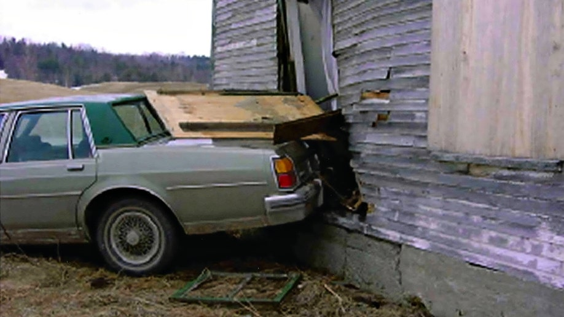

Brianna Maitland case: she passed her GED, finished her shift at 11:20 p.m., and drove off. Her car was found a mile away, backed into an abandoned building.
On March 19, 2004, Brianna Maitland, 17, passed her GED exam, then worked a shift washing dishes at the Black Lantern Inn in Montgomery, Vermont. She left alone at about 11:20 p.m. in a green 1985 Oldsmobile 88, heading for the friend's home where she was staying. The next day the car was found backed into the Old Dutchburn building about a mile away, unlocked, with her paychecks on the front seat. No one reported her missing for four days. She has never been found. Police believe she was a victim of foul play, and no one has been charged.
Case file at a glance
A trooper saw the car the next day and thought nothing of it. It was towed before anyone knew she was gone. Twenty-two years later, police say there are persons of interest they have not ruled out. Maj. Dan Trudeau: "Some we have ruled out, some we haven't." If you passed that building around midnight, or heard what happened, police want to hear from you.
- Foul play.Police first thought she might have run away; after about three months they concluded her disappearance was likely foul play (Vermont Public; CBS).
- The car.Found the next day backed into the Old Dutchburn building, doors unlocked, keys missing, two paychecks inside (Othram; VSP).
- The DNA.An item found on the ground nearby carried DNA traced in 2022 to someone who was cooperative. Police say it produced no suspect and that the lead was ruled out (VSP; Vermont Public).
- Persons of interest.Police say some have been ruled out and some have not (WCAX, 2024). No one has been named by police.
Editorial assessment of public sources, not a finding of fact. Nobody named here has been charged unless this page says so.
What happened
Details come from the Vermont State Police (case page and 2022 release), the FBI, CBS News, VTDigger, Vermont Public, WCAX, WFFF, Fox News, Othram and the Charley Project. Wikipedia, which rests in part on a 2011 TV episode and on older newspapers we could not open, is marked where we rely on it. Sources differ on small details; we note them.
Born
Brianna Alexandra Maitland is born in Burlington, Vermont, and grows up on the family's farm in Franklin County (Wikipedia; FBI).
On her own
She leaves high school and moves in with a friend in Sheldon. Vermont Public says she was couch-surfing with friends, which is why no one noticed quickly. She works at the Black Lantern Inn (Wikipedia; Vermont Public).
A fight at a party
A former friend attacks her at a party. Brianna files a complaint, which is dropped after she vanishes; Wikipedia says the former friend was cleared of involvement. We do not name her.
GED exam
She takes and passes her GED exam and has lunch with her mother, who drops her at her friend's home in the afternoon (Wikipedia).
Leaves work
She clocks out of the Black Lantern Inn and drives away alone (FBI; CBS). WFFF says about 11:30.
Passing drivers
One man passing between 11:30 and 12:30 says the headlights may have been on. Another recalls a flashing turn signal. A former boyfriend passing around 4 a.m. sees no one (Wikipedia, citing a 2011 TV episode). In 2025 private investigator Lou Barry said a couple saw a tall, stocky man in front of the headlights around midnight, then a silver or gray Honda Civic speeding and braking hard (Wikipedia; unverified).
The car is found
A trooper checks a report of an abandoned car and sees paychecks with her name inside. Because she is not reported missing, it is not treated as suspicious and is towed (VTDigger; WFFF; Othram). Reports differ on morning or early afternoon.
Reported missing
Her mother reports her missing on March 23. On March 25 her parents take photos to the St. Albans barracks (Othram).
K-9 search
State police return with a K-9 and collect an "item of interest" from the ground near where the car was found (VSP, 2022).
The Berkshire raid
After a tip that she was being held there, police raid a rented house on Reservoir Road in Berkshire, occupied by Ramon L. Ryans and Nathaniel Charles Jackson of New York. They find drugs but no sign of her (Wikipedia; WND). Accounts differ on who was arrested.
Treated as foul play
Police had thought she might have run away. After about three months they conclude foul play is likely (Vermont Public).
A signed statement
A woman gives police a statement alleging Ryans killed Brianna about a week after she vanished, in an argument over money. The County Courier reported on it in 2007. Police said it led to no solid evidence (Wikipedia; County Courier repost).
A plea in another matter
WND, citing the St. Albans Messenger, reports Ryans pleaded guilty to cocaine and marijuana possession in St. Albans, that the cocaine count was reduced because he spoke with state police about Brianna, and that a prosecutor called his polygraph on her case inconclusive. We could not check the court record.
Atlantic City video
Casino security video shows a woman resembling her at a poker table. She is never identified (Wikipedia). VTDigger says the casino reports were not verified; police call it the last reported sighting (WFFF).
An FBI flyer
An FBI flyer says the scene may have been staged (Wikipedia). The Charley Project says investigators came to believe the accident may have been staged.
A serial killer ruled out
Investigators look at Israel Keyes, who had Vermont ties, and rule him out (VTDigger; Wikipedia).
Ten years
Maj. Glenn Hall: "We suspect Brianna was the victim of foul play." He says authorities have persons of interest they cannot discount (Fox News).
The building burns
The old Dutchburn building is destroyed by fire (Wikipedia). One 2026 online account calls it arson by teenagers; we could not confirm that.
The DNA is traced
State police send the DNA to Othram. Genealogy leads them to candidate donors, and the state lab confirms one match. The work was funded through Paul Holes and the Murder Squad podcast. "This doesn't mean we have identified a suspect," says Det. Sgt. Angela Baker (VSP; Othram; CBS).
$40,000 reward
The FBI announces up to $40,000 for information leading to her recovery. Col. Matthew Birmingham: "This is not a cold case, it's an unsolved case." Maj. Dan Trudeau says the DNA lead was vetted and ruled out, and that some persons of interest have not been ruled out (VTDigger; Vermont Public; WCAX).
Twenty-one years
Det. Sgt. Baker: "I think that the answer lies somewhere," and that police "haven't ... asked the right question or we haven't asked the right person yet" (WFFF via Yahoo).
Still missing
WCAX marked 22 years in March 2026. We found no new police development through early November 2026.
Victims
A 17-year-old who had just passed her GED and was living on her own.
Photo from the FBI poster. The photo's original owner is not stated; shown at the site owner's direction. Contact us to have it removed.
MissingBrianna Maitland, 17
Born Oct 8, 1986. About 5 feet 4 inches and 105 pounds, with brown hair, hazel eyes, a scar by her left eyebrow and a pierced left nostril, per the FBI. She would be 40 now. Her father, Bruce Maitland, calls her fiercely independent and has spent two decades looking for her; he founded a nonprofit that helps other families hire private investigators (Fox News; VTDigger).
Her photo is credited under the picture. Her death has not been confirmed. Family members or others who want a photo added, changed, or removed can use the contact form at the bottom of this page.
Evidence
What exists, and what each piece may or may not mean.
| Item | What is known | Disputed or unknown | |
|---|---|---|---|
| The car | Green 1985 Oldsmobile 88 belonging to her mother, backed into the Old Dutchburn building about a mile from the inn. Doors unlocked, keys missing (FBI; VSP; Othram). |  Vermont State Police photo of the car, as published by Fox News, March 2024. Contact us to have it removed. | Whether the crash was staged is unproven. An FBI flyer said it may have been (Wikipedia). |
| The scene | Two uncashed paychecks on the seat. Loose change, a water bottle and an unsmoked cigarette outside; one passerby reported a bracelet or necklace. A woman's fleece jacket in a nearby field was not hers (Wikipedia; Charley Project). Her father says the first person to see the car reported doors open and lights on (Fox News, 2024). |  The car and the building on March 20, 2004. Unknown photographer, via the Charley Project, listed as CC0 on Wikimedia Commons. | The car was towed before anyone knew she was missing, so the scene was not preserved (VTDigger). |
| Belongings | Her ATM card, glasses, contact lens case and migraine medication were in the car (Wikipedia). Fox News lists her wallet, paycheck and food. | Whether anything of hers is missing has not been made public. | |
| DNA on the item | An item from the ground near the car, collected about a week later, carried DNA. It did not match CODIS or 11 persons of interest. Othram's genealogy led police to a donor in 2022 (VSP; Othram). | Police said it was unclear if the item was related. The donor was cooperative, and Maj. Trudeau said in 2024 the lead was ruled out (Vermont Public). The item has not been described. | |
| DNA from the car | In 2016 investigators said evidence from the car could lead to a suspect (Wikipedia; Fox News, 2014). | Wikipedia describes the 2022 match as DNA from the car; the state police release says the item was on the ground. We follow the release. | |
| Witnesses | Passing drivers recalled headlights, a turn signal, and in a 2025 account a tall, stocky man and a silver or gray Honda Civic. | The Honda account comes only from a private investigator, through Wikipedia. Police have not confirmed it. | |
| The Atlantic City video | A woman resembling her at a poker table, Feb 17, 2006 (Wikipedia). | Never identified. VTDigger: not verified. | |
| Age progression | The FBI's image of how she might look at 37. | Age-progressed to 37 (made for the 2024 appeal), from the FBI poster. An artist's estimate, not a photo. | An estimate only. |
| The inn | Her workplace and the last place she was confirmed seen. |  The Black Lantern Inn, Montgomery. Photo: TP94, CC BY-SA 4.0, via Wikimedia Commons. |
Public documents
The FBI page, local news, and reference pages are the public record. The Vermont State Police case file is not public.
| Document | Holder | What it shows | Access |
|---|---|---|---|
| FBI: Brianna Maitland | FBI | Reward, description, tip lines, photos and an age-progressed image. | Online, free |
| VTDigger (March 2024) | VTDigger | Timeline and police statements. | Online, free |
| Charley Project | Charley Project | Description and circumstances. | Online, free |
| State police DNA release (Mar 18, 2022) | Vermont State Police | The K-9 item, CODIS, Othram, no suspect. | Online, free |
| 2004 charges against a former friend (dropped) | Franklin County court | Reported by Wikipedia; we did not see the record. | Request needed |
| 2004-2005 drug case file (Berkshire raid) | Vermont Superior Court, Franklin Unit | Reported by WND citing the St. Albans Messenger; we did not see the record. | Request needed |
| Late-2004 statement | Vermont State Police | Reported by the County Courier in 2007; we did not see the document. | Quoted in news |
| Vermont State Police case file and DNA reports | Vermont State Police; Vermont Forensic Laboratory | The investigation. | Withheld or sealed |
Access labels: Online, free = we could open it. Fan-hosted copy = a private researcher posted scans; originals are held by the named agency, and we cannot vouch for completeness. Quoted in news = reporters read it; we did not see the document itself. Request needed = held by an agency or court. Withheld = the holder has not released it. We cannot reach non-public records, and we do not try to.
Online discussion (unverified)
Where people talk about this case online, and how to read it.
| Platform | Live search | What you tend to find |
|---|---|---|
| Google: Reddit | site:reddit.com search | Public Reddit threads that Google has indexed, including old discussions. |
| Google: X and Twitter | X and Twitter posts | Public posts and profiles that appear in search results. |
| Google: Facebook | Public Facebook pages and posts | Only public pages and groups that Google can see. Private groups never appear. |
| Google: Instagram and TikTok | Instagram and TikTok | Public posts, memorials, and videos. |
| Google: forums | Forums and message boards | Long-running true-crime forums. |
| Google News | Latest news | Newest reporting, which is usually more reliable than posts. |
| Websleuths | Case thread | A long-running case thread. Posters often save links to old news reports; we follow those links and cite the news, never the posts. |
| Search Reddit | Long discussion threads and theories, often by amateur researchers. No sign-in needed to read. | |
| X (Twitter) | Search X | Short posts, news links, and anniversary notes. May require sign-in. |
| Search Facebook | Public groups and family or community pages. Requires sign-in. | |
| Search #briannamaitland | Memorial and true-crime posts. Requires sign-in. | |
| YouTube | Search YouTube | Documentaries, news clips, and interviews. Quality varies widely. |
Be careful with online theories. Naming a private person as a suspect can harm an innocent family, and many "identifications" on forums have been wrong. Our own tools could not read these platforms: Reddit blocks automated access, and the others require an account. The Google searches above work from your browser. To get new public mentions by email, make a free Google Alert for the case name in quotation marks.
Coverage timeline and verification
What local and national reports say, and when we last checked for a solution.
| Date | Outlet | What it reported | Link |
|---|---|---|---|
| Current | FBI | Reward up to $40,000; age progression to 37. | Read |
| March 26, 2014 | Fox News | Maj. Hall: foul play suspected; persons of interest not discounted. | Read |
| March 18, 2022 | Vermont State Police | K-9 item and DNA source identified; no suspect. | Read |
| March 18, 2022 | CBS/AP | DNA identified; 11 people compared. | Read |
| March 18-19, 2024 | WCAX | Trudeau: some persons of interest not ruled out. | Read |
| March 19, 2024 | VTDigger | Twenty years on; $40,000 reward; 2022 DNA match. | Read |
| March 19, 2024 | Vermont Public | DNA lead vetted and ruled out; foul play view since 2004. | Read |
| March 25, 2024 | Fox News | Her father's account; state police car photos. | Read |
| March 19, 2025 | WFFF via Yahoo | Det. Sgt. Baker: the answer lies somewhere. | Read |
| March 19, 2025 | WCAX | Marks 21 years. | Read |
| March 19, 2026 | WCAX | Marks 22 years; still missing. | Read |
Status is re-checked on a regular schedule. If you know of a development we missed, use the clue form near the top of this page or the contact form, and include a link.
Suspects
Police have never named a suspect. These are the people publicly linked to the case, and what is and is not known.
Ramon L. Ryans
Why named: A 2004 tip placed Brianna at the Berkshire house he rented, and police raided it. A woman's statement in late 2004 alleged he killed her over money (Wikipedia; County Courier repost). WND, citing the St. Albans Messenger, says a 2005 drug charge was reduced because he spoke with police about her, and a prosecutor called his polygraph inconclusive.
Against: Police found no sign of her at the house, and said the statement led to no solid evidence. He acknowledged knowing her and denied any involvement (online summaries). He was never charged in her case. Her father said in 2024 he no longer believes the people he first suspected were involved, without naming anyone (Fox News).
Nathaniel Charles Jackson
Why named: He also rented the Berkshire house (Wikipedia), and the late-2004 statement implicated him as well.
Against: No sign of her at the house, and the statement was not corroborated. Sources conflict on whether he was even arrested in the raid. He was never charged in her case.

FBI photo, public domain, via Wikimedia Commons. He is shown because he was publicly investigated. The FBI ruled him out.
Ruled outIsrael Keyes (died 2012)
Why named: A serial killer with ties to Vermont. Investigators looked at a possible link in 2012.
Against: The FBI ruled him out in December 2012 (VTDigger; Wikipedia).
The 2022 DNA donor
Why named: DNA on an item near the car was traced to this person.
Against: Police say the person was cooperative, no suspect came of it, and the lead was ruled out (VSP; Vermont Public). We do not know who it is.
A tall, stocky man
Why named: A 2025 account from private investigator Lou Barry describes a tall, stocky man in front of the headlights around midnight, then a silver or gray Honda Civic.
Against: Unverified. No description beyond this; no image exists.
Where a card shows a silhouette, we found no photo. Anyone who wants a photo added, changed, or removed can use the contact form at the bottom of this page.
Latest: persons of interest not ruled out
The newest police statements are from March 2024 and March 2025.
What is known
- Police believe she was a victim of foul play (CBS, 2024).
- Maj. Trudeau, 2024: "There is a number of persons of interest in this case ... Some we have ruled out, some we haven't" (WCAX).
- The DNA lead traced in 2022 was vetted and ruled out (Vermont Public).
- The FBI offers up to $40,000 for information leading to her recovery (FBI).
- Det. Sgt. Angela Baker, 2025: police have not yet asked the right person (WFFF).
What would settle it
- A witness from that night. Anyone who saw a person or a second car at the building around midnight.
- The evidence from the car. New testing of what was collected in 2004.
- Someone who was told. A person who heard what happened and has kept quiet.
She met someone on the road home, and the scene was arranged afterward
We put the chance of foul play at roughly 90%: police believe it, and she left behind her paychecks, glasses and medication. We put the chance that the car was positioned deliberately at roughly 55%. We put the chance of a resolution within five years at roughly 12%. That is our judgment, not a finding.
Editorial judgment, not statistics.
Elimination matrix
"—" means no public information, not a clean result.
| Person or idea | Link to the car | Physical link | Legal outcome |
|---|---|---|---|
| Ramon L. Ryans | ? tip and statement only | — none published | ? never charged in her case |
| Nathaniel C. Jackson | ? tip and statement only | — none published | ? never charged in her case |
| 2022 DNA donor (unnamed) | ? item near the car | ✗ lead ruled out | — no suspect |
| Israel Keyes | ✗ ruled out | — | ✗ ruled out Dec 2012 |
| She left voluntarily | ✗ items left behind | — | ✗ police: no evidence she left willingly |
✗ excluded or contradicted · ✓ supports · ? disputed · — nothing public. No cell is an official finding.
Our hypothesis
Editorial reading of public records. A working theory, not a finding, and it names no individual.
Stopped on the road home
- She never reached the friend's home. The car stopped about a mile from work.
- She did not leave by choice. Her paychecks, glasses and medication stayed behind.
- The car may have been placed there. It was backed in, and the FBI once said the scene may have been staged.
- A second person or vehicle was likely there. Without one, she could not have left that road.
- Someone local may know. It is a small community, and police say not every person of interest has been ruled out.
Judgment, not statistics.
Missing links
Questions raised by gaps in the public record.
1. The hour after work
What happened between 11:20 p.m. and the first passing driver.
2. The second vehicle
Whether a silver or gray Honda Civic was really there, and whose it was.
3. The keys
Reported missing from the car (Othram).
4. The remaining persons of interest
Who police have not ruled out.
5. The Atlantic City woman
Whether she can be identified.
6. What the car still holds
Whether evidence collected in 2004 can be tested again.
Evidence gaps
"Not public" means we could not find a report.
| Item | Tested | Gap |
|---|---|---|
| Car evidence | Processed by the state crime lab, March 30, 2004 (Wikipedia). | Results not public. |
| The ground item | DNA traced in 2022. | What the item was: not public. |
| Scene records | Towed March 20, 2004. | The car was gone before she was reported missing. |
| Police file | Vermont State Police. | Not public. |
Forensic tech
| Tool | What it could do | Status here |
|---|---|---|
| DNA in CODIS | Match a profile to a known offender. | Done; no match (VSP) |
| Forensic genetic genealogy | Identify an unknown donor through relatives. | Done by Othram; lead ruled out |
| Re-testing car evidence | Find profiles older tests missed. | Not reported |
Solved cases
Local cases that moved after decades.
Carol Sue Klaber (Boone County, KY, 1976)
Investigators say a private genealogy investigation helped them identify Thomas Dunaway, who died in 1990, as the man who killed the 16-year-old. He cannot be indicted, so prosecutors sent a letter saying he would have been charged. The lesson: genealogy can name a killer after decades, even when no trial is possible.
Forensic genetic genealogy training
In 2024, local investigators were being trained in the technique, which has already helped solve Cincinnati-area cases, according to FOX19. The lesson: the tool is now local, so cases with usable DNA have a real path forward.
Golden State Killer
Old crime-scene DNA matched relatives in a public database and led to a 2018 arrest. The lesson: a usable sample can still work after decades.
Case details come from public news coverage and the Boone County Sheriff's cold-case list. Confirm in court records.
False leads
| Claim | Source and date | Where it stands |
|---|---|---|
| Linked to Maura Murray | Online speculation | She vanished in New Hampshire weeks earlier. Police found no connection (Wikipedia). |
| Israel Keyes took her | Theories | Ruled out in 2012 (VTDigger). |
| Held at the Berkshire house | A 2004 tip | Police raided it and found no sign of her. |
| The late-2004 statement | Reported by the County Courier, 2007 | Police said it led to no solid evidence. It was never corroborated, and we do not repeat its details. |
| She moved to Atlantic City | Casino video, 2006 | The woman was never identified, and the reports were not verified (VTDigger). |
| Drug debt | A St. Albans Messenger story | WND says the paper printed a retraction about a year later. Police have not given a motive. |
| Barn, house or farmhouse | Sources differ | The FBI and CBS say barn; Wikipedia and WCAX say house; VTDigger and Fox say farmhouse; state police say an abandoned building known as the Old Dutchburn Barn. Montgomery or Richford also varies. |
Where
The Black Lantern Inn is in Montgomery, Franklin County, northern Vermont, near the Canadian border. The car was found about a mile away on Route 118. The building burned in 2016. We do not pin any home.
Open in maps: Montgomery, Vermont. We show no photograph of the scene.
Source ratings
| Source | Type | Rating | Use with care because |
|---|---|---|---|
| Vermont State Police (case page; March 18, 2022 release) | Police | A | Read; the K-9 item, DNA, tip lines. |
| FBI poster | Federal agency | A | Read through the FBI data feed; reward, photos, age progression. |
| CBS News (2022, 2024); VTDigger (2024); Vermont Public (2024); WCAX (2024-2026); WFFF via Yahoo (2025) | News | A- | Read; police statements. |
| Othram / DNASolves (2022) | The lab | B+ | Read; timeline and funding. |
| Fox News (2014, 2024) | National news | B+ | Read; police and father's accounts, car photos. |
| Wikipedia | Encyclopedia | B | Read; much of it rests on a 2011 TV episode and older papers we could not open. |
| Charley Project | Volunteer database | B | Read. |
| WND (Mar 18, 2006) | Opinion-leaning outlet | C | Long page, partly read through a summary; the only source we found for the 2005 plea details. |
| County Courier (2007), through a repost | Weekly newspaper | C | Original blocked; seen only through a repost in search results. |
| Podcasts, Substack and blogs | Media | D | Used only for the denials, and labeled. |
Records
Vermont State Police
Lead agency. Tips: 1-844-84-VTIPS, text VTIPS to 274637, or headquarters 802-244-8727.
FBI Albany Field Office
Tips: 1-800-CALL-FBI or tips.fbi.gov. Funds the reward.
Franklin County State's Attorney
Charging decisions.
Sample public-records request
Under the Vermont Public Records Act (1 V.S.A. 315 et seq.), I request copies of non-exempt records relating to the March 19, 2004 disappearance of Brianna Maitland from Montgomery, Vermont, including incident reports, laboratory reports, and any evidence inventory. Please send electronic copies. If any part is withheld, please identify the exemption relied on and release all reasonably segregable material.
Agencies often withhold records of open investigations, so expect partial answers.
Remembering the victims
Brianna was 17. Her father, Bruce Maitland, has stayed in touch with investigators for more than two decades and started a nonprofit that helps other families. We would welcome a statement, a photo or corrections from the family.
News & databases
In the news
Loading headlines…
Research
News archives
Sources
Every fact on this page comes from one of these. Where they disagree, we say so above.
- Brianna Maitland, FBI poster (reward up to $40,000, description, photos, age progression).
- Brianna Maitland, Vermont State Police unsolved case page (undated; lists an older $5,000 reward).
- Source of DNA in Brianna Maitland investigation identified, Vermont State Police release, March 18, 2022.
- DNA identified in search for Brianna Maitland, CBS/AP, March 18, 2022.
- What happened to Brianna Maitland?, Othram / DNASolves (Michael Vogen), March 18, 2022.
- FBI offers $40,000 reward, CBS News (Cara Tabachnick), March 19, 2024.
- 20 years after Brianna Maitland's disappearance, investigators hope reward money will bring new clues, VTDigger (Alan J. Keays, Diane Derby), March 19, 2024.
- VSP offers $40K reward to help find Brianna Maitland, Vermont Public (Liam Elder-Connors), March 19, 2024.
- VSP's Major Crime Unit investigates dozens of cold cases, Vermont Public (Liam Elder-Connors), April 29, 2024.
- FBI offers $40K reward in effort to help solve Brianna Maitland case, WCAX (Hailey Morgan), March 18-19, 2024.
- Missing Vermont teen Brianna Maitland: father suspects some kind of struggle, Fox News (Audrey Conklin), March 25, 2024 (source of the state police car photo).
- A decade later, Vermont police hope new leads solve disappearance, Fox News (Cristina Corbin), March 26, 2014.
- Mystery in the Mountains: Where is Brianna Maitland?, WFFF (Libbi Farrow) via Yahoo, March 19, 2025.
- Maitland cold case marks 21 years, WCAX, March 19, 2025.
- This Day in History: Vt. teen goes missing, WCAX, March 19, 2026.
- Disappearance of Brianna Maitland, Wikipedia (raid, statement, witnesses, Atlantic City; marked where used).
- Brianna Alexandria Maitland, Charley Project.
- Serial killer behind 'disappearing' women?, WND, March 18, 2006 (2005 plea, citing the St. Albans Messenger; partly read through a summary).
- Affidavit: Brianna Maitland Murdered, County Courier (Albarelli, Kettler), Feb 1, 2007; repost seen in search results only.
- Missing: Brianna Maitland, Killer Queens podcast, 2021 (denials; unverified).
- Missing in Vermont, Substack, Oct 2026 (denials, fire; unverified).
This is a missing-person case; her death is not confirmed. Police have named no suspect. Ramon Ryans and Nathaniel Jackson appear only because their names became public; the statement about them was never corroborated, and the 2005 plea details rest on one 2006 report we read in part and could not check against court records. We found no photo of either man. The Honda Civic account comes from a private investigator through Wikipedia. Reward figures changed over time; we use the FBI's. We do not name her mother, friends, the former friend who was cleared, the woman who gave the statement, or others arrested in the raid.
Change log
- Oct 8, 2026: File published.
- Nov 6, 2026: Rebuilt after deeper research: FBI photos and age progression, state police photo of the car, the state police 2022 DNA release, what Maj. Trudeau said in 2024, the 2004 raid and the people publicly named, and witness accounts.